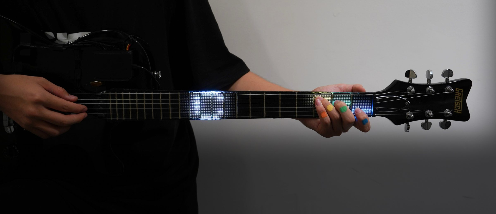
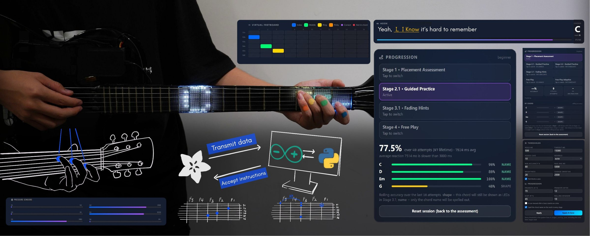
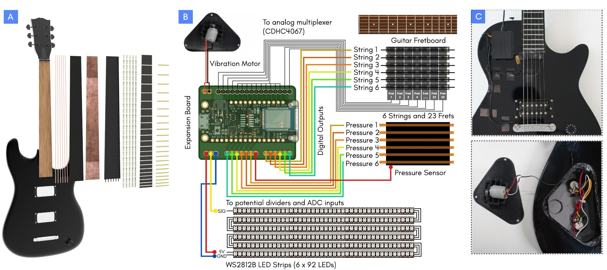
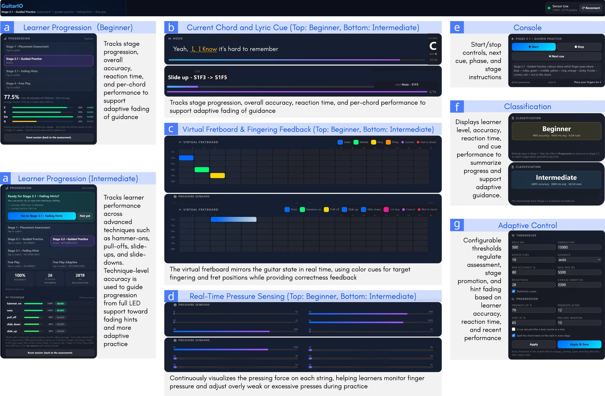
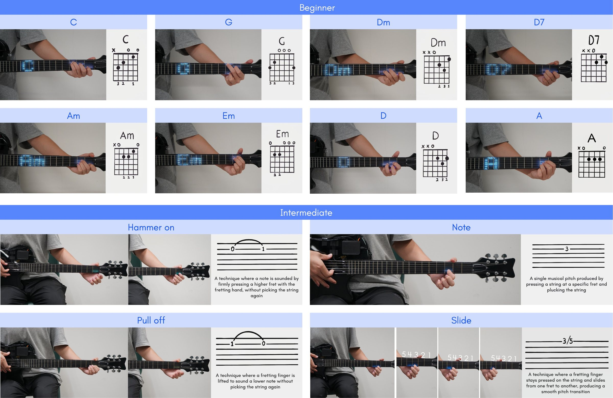
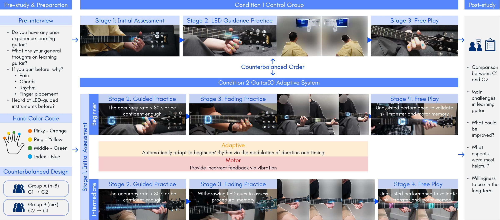

GuitarIO
Learning guitar requires beginners to coordinate finger placement, pressure, rhythm, and movement, yet much self-directed learning still relies on static diagrams or screen-based instruction with limited awareness of how the instrument is physically being played.
We present GuitarIO, an interactive guitar that integrates multimodal sensing and feedback directly into the instrument to support adaptive learning. A 3D-printed conductive fret array detects fret–string contact, while pressure-sensing channels measure fretting force. Embedded LEDs provide spatial guidance at the fretboard, vibrotactile feedback communicates errors, and a companion interface visualizes accuracy, progress, and score. Rather than providing constant assistance, GuitarIO progressively removes visual guidance as learners become more consistent.
We evaluate the system with 25 participants: 15 beginners and 10 intermediate players, across multiple feedback and learning modes. GuitarIO demonstrates how multimodal feedback and progressive fading of assistance can support more adaptive and embodied guitar learning while reducing reliance on external guidance.

Overview

The guitar senses where and how hard each string is pressed, sends the data to a companion app, and receives instructions back — lighting the next fingering on the neck and tracking progress on screen.
System & Hardware

(A) Exploded view of the instrument with the conductive fret array, pressure-sensing channels and LED strips layered into the neck. (B) Wiring: a microcontroller reads 6 strings × 23 frets through an analog multiplexer, six pressure channels, and drives six WS2812B LED strips (6 × 92 LEDs) and a vibration motor. (C) The assembled prototype.
Companion Interface

Learner progression, chord and lyric cues, a virtual fretboard that mirrors the guitar in real time, per-string pressure sensing, learner-level classification, and configurable thresholds that drive the adaptive fading of guidance.
Chords & Techniques

Beginner content covers eight open chords (C, G, Dm, D7, Am, Em, D, A), each displayed as LED letters on the neck. Intermediate content covers hammer-ons, pull-offs, single notes and slides.
User Study

A counterbalanced study compared LED guidance alone with the GuitarIO adaptive system, moving from initial assessment through guided practice and fading hints to unassisted free play, framed by pre- and post-study interviews.